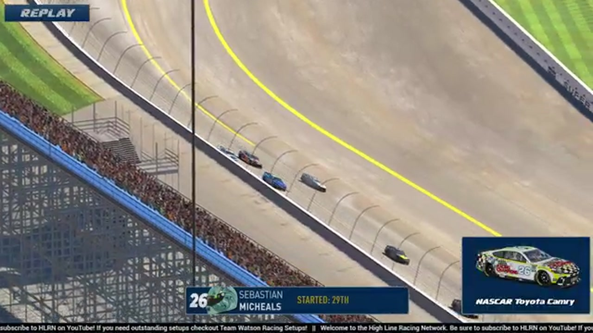

Sebastian Michaels
Team assignment not stated in the structured owner record.
AN OFFICIAL-TAPE FOOTPRINT, NOT A RESULTS CLAIM
- Official files
- 8
- Central editions
- 0
- Exact tape cues
- 5
- Accepted podiums
- 0
Sebastian Michaels appears in 8 official HLRN broadcast files across Seasons 1, 2. The current result ledger does not assign this driver a supported top-three finish. A consistently stated team affiliation remains open for owner review. The currently indexed source window runs from February 16, 2026 through July 20, 2026.
The primary chapter index supplies 5 direct jump points. Talladega is the most frequent named track in the current appearance ledger. The densest direct-tape categories are incident (3 cues) and strategy (1 cue). Those counts describe where the name is easiest to find; they are not fault, pace, or performance grades. A source-attributed car frame is published with its original video and timestamp. That is the current discovery map for Sebastian Michaels.
Official name signals are used for discovery only. They do not become starts, points, incident counts, or an ability grade. This page is deliberately detailed about the tape and restrained about the unavailable competition record. Separately, 9 Highline Live files sit on the bonus shelf and never enter the official season ledger. The displayed name is labeled broadcast lower third confirmed; that status remains visible so an owner roster can strengthen or correct the identity without rewriting the evidence trail. Those boundaries define Sebastian Michaels's public HLRN file.
5 featured race-tape cues
These are discovery routes into complete HLRN broadcasts, not performance grades or inferred results.
- S1 / R15 · BATTLE
Brian Hebert and Sebastian Michaels carry the iRacing Superspeedway lead battle
S1 / R15 at 1:50:54: The iRacing Superspeedway pack compresses in a front-pack fight while Brian Hebert and Sebastian Michaels are named on the call. The chapter keeps the live battle intact and makes no finishing-order claim.
iRacing Superspeedway - S2 / R1 · STRATEGY
Sebastian Michaels brings Daytona damage through the pit cycle
HLRN returns live to pit road, checks Shawn Stamper for his fans, and then follows Sebastian Michaels's damaged car out of its stall. The card records repair context rather than a Stamper pit-strategy claim.
Daytona - S2 / R1 · INCIDENT
Sebastian Michaels and Daryl Sabalos surface in the Daytona caution replay
S2 / R1 at 2:11:19: The caution sequence centers the replay call on Sebastian Michaels and Daryl Sabalos. This is a source-bounded incident window; it preserves what the booth reviews without assigning unsupported fault.
Daytona - S1 / R14 · INCIDENT
A loose car triggers the Richmond caution
S1 / R14 at 1:34:35: The caution sequence centers the replay call on Sebastian Michaels and Jerry Fassett. This is a source-bounded incident window; it preserves what the booth reviews without assigning unsupported fault.
Richmond - S1 / R1 · INCIDENT
Connection trouble obscures Daytona's late caution review
The caution is out as the broadcast glitches heavily. HLRN checks Sebastian Michaels, Matt Brown, Jerry Fassett, and Cory Cook while searching for a usable replay, but the tape does not establish a single cause.
Daytona
Verified team history is not consistently stated. No position-specific top-three result is currently accepted. The public spelling has broadcast identity support; an owner roster can still add legal-name, number, and team-history detail.